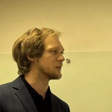
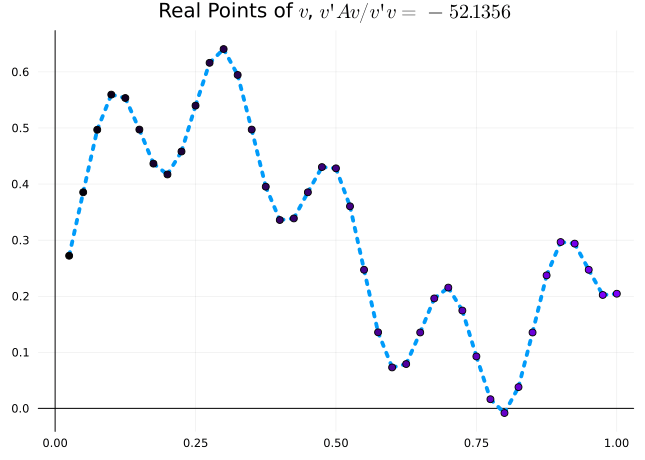
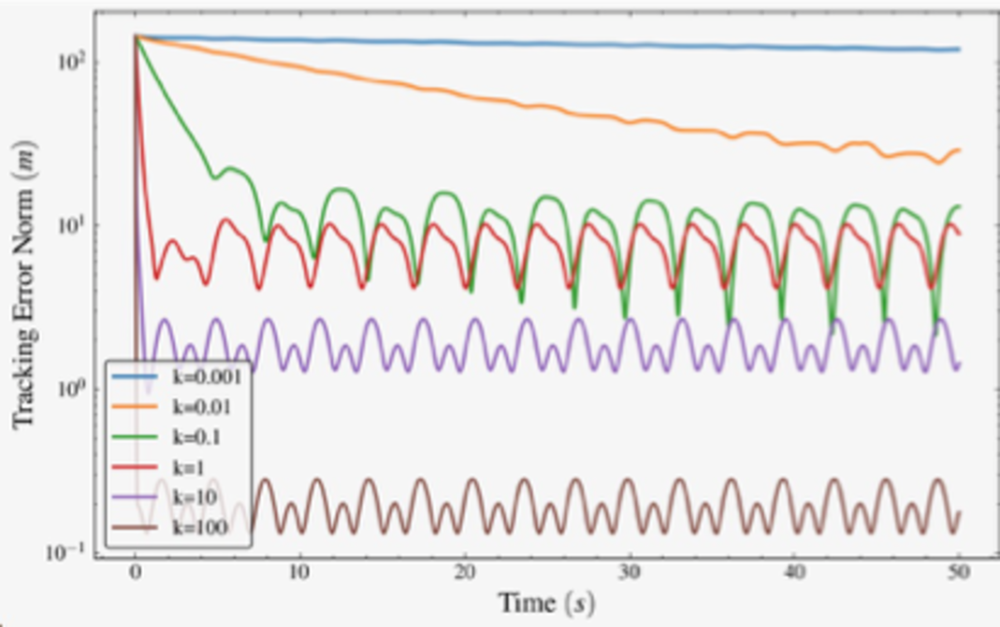

Sheaves for Coordination Problems in
Distributed Autonomous Systems
James Fairbanks
Department of Mechanical & Aerospace
Engineering, University of Florida
CODAC Kickoff Meeting · September 25, 2026


PART ONE
Sheaves and Target Tracking
Sheaves as the Bridge from Diagrams
to Real Robots
WITH

Tyler Hanks

Joana Bou Barcelo

Wilmer Leal

Itay Kadosh

Hans Riess

Matthew Hale

Warren Dixon

Graph-Laplacian Control, and Its Assumptions
Agents are nodes, sensing or communication links are edges. Each agent compares its state with its
neighbors', and local disagreement drives the network toward a global objective.
- ●Compatible state spaces across every agent
- ●A measurement each pair of neighbors can compare directly
- ●Two planar robots comparing positions in the same frame


Natural for consensus, formation control, and leader–follower tracking — as long as the states are
comparable.
Harmonic Extension as Control Objective
Finding a Global Section
\[ \mathcal{L}_{\mathcal{F}} \begin{bmatrix} q \\ p \end{bmatrix} = \begin{bmatrix} \mathcal{H} & -\mathcal{B} \\ -\mathcal{B}^\top & \mathcal{L}_P \end{bmatrix} \begin{bmatrix} q \\ p \end{bmatrix} = 0 \]
Harmonic Extension
\[ \mathcal{H} q = \mathcal{B} p \quad \Longrightarrow \quad q^\star = \mathcal{H}^{-1}\mathcal{B} p \]
What the Blocks Mean
\( \mathcal{H} = \mathcal{L}_Q + D \) total agent interaction map
\( \mathcal{B} \) agent–target sensing map
\( \eta = \mathcal{H}q - \mathcal{B}p \) agent disagreement relative to targets
Standing
Assumption (Control Authority). Target dynamics \( \dot{p} = f_p(p, t) \) induce motion on
the harmonic extension \( \dot{q}^\star =
\mathcal{H}^{-1}\mathcal{B}\dot{p} \). Agents must have sufficient control authority to keep up
with the changing \( q^\star(t) \).

The harmonic extension \( q^\star(t) \) is the
dynamic target reference that agent feedback tracks.
[5] T. Hanks, C. F. Nino, J. Bou Barcelo, A. Copeland, W. E. Dixon, and J. Fairbanks. European Control Conference, 2026
Who Can Track Whom Is a Cohomological Question
Ships Tracking Submarines — Determined
A ship is stuck on the surface, so the target’s three coordinates determine its two. The harmonic extension is unique and the relative cohomology vanishes.
Quadcopters Tracking Ships — Underdetermined
A quadcopter also has an altitude, which nothing it measures about a surface vessel constrains. That spare degree of freedom is the non-vanishing relative cohomology.
Trackability is whether the measurements pin down every degree of freedom the agents have. The cohomology
counts the ones they miss.
[5] T. Hanks, C. F. Nino, J. Bou Barcelo, A. Copeland, W. E. Dixon, and J. Fairbanks. European Control Conference, 2026
Thirteen Agents, Four Targets, Two Domains
- ●Thirteen planar agents with nonlinear dynamics
- ●Four underwater targets in a tetrahedron formation on figure-eight paths
- ●Restriction maps project three-dimensional target states into the plane
- ●Decentralized control under external disturbances
Each cluster senses one submerged target; dashed links carry agent-to-agent and target-to-target
communication.
Surface vehicles track their targets through a projection they can measure; the restriction maps carry the
dimension change.
[5] T. Hanks, C. F. Nino, J. Bou Barcelo, A. Copeland, W. E. Dixon, and J. Fairbanks. European Control Conference, 2026
The Agents Reach and Hold the Formation
Formations, in the Plane
Agent and Target Trajectories

Tracking Error by Gain

A larger gain shrinks the residual error, exactly matching the convergence bound.
Agents converge from arbitrary initial positions into the square and triangle formations, and hold them as
the targets move.
[5] T. Hanks, C. F. Nino, J. Bou Barcelo, A. Copeland, W. E. Dixon, and J. Fairbanks. European Control Conference, 2026
PART TWO
Layered and Nested Control for Sheaf Coordination
Separate the Fleet’s Decision from Each Vehicle’s Loop
Layered Control Architecture
1. Harmonic Reference & Velocity Solves (Sheaf)
Computes harmonic position \(H q^*(t) = -L_{AB} p(t)\) and velocity \(H \dot{q}^*(t) = -L_{AB} \dot{p}(t)\) via distributed multifrontal tree solve.
2. Two-Stage Reference Filter (Boundary Layer)
On-board filter \(\epsilon \dot{x}_{\text{ref}} = -x_{\text{ref}} + q^*(t)\), \(\epsilon \dot{v}_{\text{ref}} = -v_{\text{ref}} + \dot{q}^*(t)\) smooths discrete communication updates.
3. Feedforward + Feedback Control Law
\(u = -K(x - x_{\text{ref}}) + B^\dagger (v_{\text{ref}} - A_c x)\). Feedforward eliminates dynamic escort tracking lag while preserving input-to-state stability.

Topological coordination at the fleet scale, feedforward tracking at the vehicle scale.
[31] I. Kadosh, R. Samuelson, and J. Fairbanks. IEEE Control Systems Letters, under review · [5, 10]